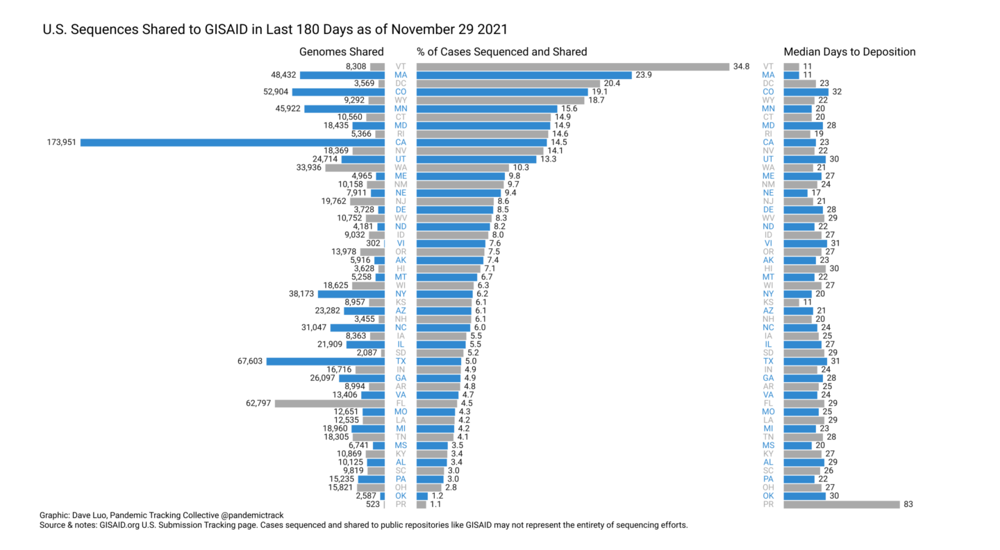
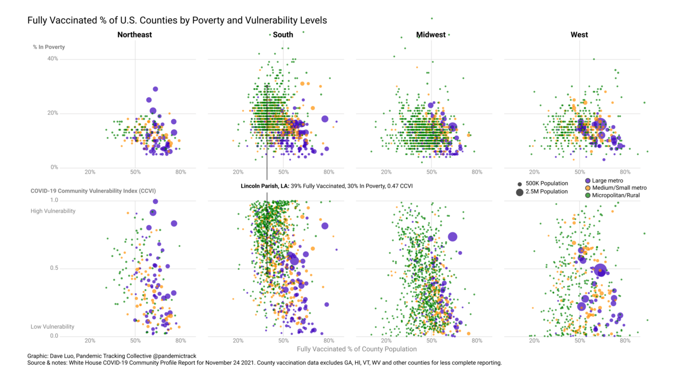

Genomic Surveillance Is Essential To Track Covid-19 Variants in Both Unvaccinated and Vaccinated Populations
Technological advancements have made sequencing quicker and more affordable, but collaboration, outreach, and trust are needed to achieve representative samples from underserved populations.
This piece is originally published at rockefellerfoundation.org/blog/genomic-surveillance-is-essential-to-track-covid-19-variants-in-both-unvaccinated-and-vaccinated-populations/
The course of the Covid-19 pandemic depends not only on how the SARS-CoV-2 virus changes, but on how communities respond to it. Public health officials can only make decisions to protect their communities if they know how much virus is circulating locally, which viral variants are present, and whether variants are emerging that may be more virulent or transmissible, or less susceptible to vaccines or medications. The only way to do this is through adequate genomic sequencing, which may not be available in communities that need it. Improvements in sequencing technology, training, and lab availability can help overcome barriers to representation and strengthen sequencing capacity and fill in large gaps in genomic data in the US and around the world. Collaboration and trust are crucial for working with communities to track the virus and get ahead of the pandemic.
Sequencing detects variants.
A diagnostic PCR test can tell whether SARS-CoV-2 is present in a sample–but in most cases not which variant. This is because the test detects limited, preselected portions of viral genes. In contrast, whole genome sequencing reveals the entirety of the SARS-CoV-2’s genetic material, also known as its genome. Once a full genome is sequenced, scientists can share data globally and compare it to an array of other genomes collected in global databases such as GISAID. Comparative analysis lets them identify mutations–or changes–from the original (wild type) virus sequenced and shared with the global GISAID community in January 2020. This analysis can spot an accumulation of mutations that could change how a variant virus behaves. Changes like increased transmissibility, an altered clinical course, decreased effectiveness of therapeutic treatments, or vaccine escapemay lead to designation as Variants of Interest (VOI) or Variants of Concern (VOC), which are given Greek letter names by the World Health Organization (WHO). While the Delta variant continues to be the dominant lineage worldwide,the WHO designated the Omicron variant as a new VOC on November 26.
Extensive laboratory studies can help determine the role of specific mutations, which can help predict the hallmarks of newly identified variants. The table below lists some important mutations in the viral spike protein that have been shown to affect the characteristics of the five WHO-designated VOCs, including Omicron. Mutations in other proteins may also affect the properties of viral variants.
Table 1. Sequencing capacity varies greatly across US states based on what % of cases are sequenced, how many sequences are shared, and submission latency to GISAID over the past 180 days.
Genomic surveillance can help map the pandemic and detect changes.
Genomic surveillance and other epidemiological studies, such as analysis of air or wastewater samples, can help determine how prevalent particular variants are, locally and globally, and can help track their circulation through populations. Large-scale surveillance is also essential for detecting new variants with different, perhaps more concerning characteristics. Already, scientists have documented multiple sublineagesof the Delta variant, that is, Delta with additional mutations, and one particular sublineage has been designated a Variant Under Investigation by the UK after it showed signs of slowly outcompeting its parent lineage.
In unvaccinated populations, rampant viral replication and transmission increases the risk of new variants emerging. Among the vaccinated, patterns of breakthrough cases can provide information about potentially more transmissible or immune-evasive variants. It is thus important to sequence a representative sample of virus obtained from both vaccinated and unvaccinated individuals.
Ideally, for effective surveillance, viral genomes from 5% or more of a representative sample of COVID-19 cases should be sequenced. Over the course of the pandemic, only 13 countries have sequenced at that level, increasing slightly to a total of 17 in the most recent 6 months. As of the end of November 2021, the United States ranked 20th in the world (of those sharing at least 5,000 genomes with GISAID) over the course of the pandemic, sequencing around 3.6% of its cases. Over the last 6 months, however, the percentage of cases sequenced and submitted to GISAID by the US has risen to nearly 7%, ranking the US 13th in the world and surpassing the 5% surveillance target. This may be an undercount, since the genomes submitted to GISAID may not represent the entirety of the US sequencing effort. The US Centers for Disease Control and Prevention (CDC) has been collaboratingwith state and local public health departments as well as commercial diagnostic laboratories to increase sequencing capacity in the US. On November 27, 2021, Scott Becker, the CEO of the Association of Public Health Laboratories, estimated that nationally 5-10% of all diagnostic specimens were being sequenced, meaning the system can detect variants down to 0.01% of circulating viruses. On a state-by-state level, however, the percentage of cases sequenced and shared can vary widely, from 1.1% (Puerto Rico) to 34.8% (Vermont) in the last 180 days.

A lack of health services often correlates with housing and food insecurity and other factors that can increase an individual’s risk of SARS CoV-2 exposure and thus community transmission of COVID-19. Communities with limited health care infrastructure may also lack testing and vaccination capacity and the ability to sequence viral samples. High levels of viral transmission or the emergence of variants may or may not occur in these communities, but there is no way to know without adequate genomic surveillance. It is crucial to pair robust testing with variant tracking in all communities, to best protect these areas at risk of high spread. If local outbreaks are identified, interventions such as masking, social distancing, and vaccination can be targeted and decrease the risk of new variants emerging.
Recent advances in technology have made sequencing quicker and more affordable.
The United Kingdom began using a new PCR genotyping assay in March 2021. This assay uses the same equipment used in diagnostic PCR laboratories while also detecting specific mutations in known variants. The genotyping assay has successfully identified variants circulating in the UK. Although it is inexpensive, at less than $2 per sample, and has a quicker turnaround time than methods that sequence the whole viral genome, the genotyping assay relies on detecting mutations revealed by prior sequencing of whole genomes and cannot detect new variants that do not possess known mutations. This makes it excellent for following trends of known variants in near real time, but inadequate for comprehensive surveillance.
The cost for sequencing complete genomes has rapidly declined in the past decade, to as little as $15 per sample. The physical size of the equipment has decreased to the point where some sequencing technology is portable and processing requirements have fallen to the point that data can be processed on alaptop computer. Second-and third-generation sequencing technologies put near real-time, on-site sequencing within reach of more laboratories.

Genomic surveillance is made possible through collaboration, outreach, and trust.
The Health Hut, a community clinic in Lincoln Parish, Louisiana offers healthcare for its clientele, 65% of whom lack health insurance. The clinic performs a variety of services, including Covid-19 testing and vaccination, and now conducts genomic surveillance. Chelsea Streets, a medical assistant at The Health Hut, helps with obtaining patient swabs for sequencing. “All our patients are very happy to be involved in collecting their samples,” she says. “Anything to help us try to get rid of this Covid.” The process was streamlined by only requiring one swab for both testing and sequencing, eliminating the need for a return visit and making comfort and convenience a priority.
Engaging the community also means empowering their clientele with information.
“I love that people are learning about viruses,” says Dr. Jacquelyn White, Medical Director of The Health Hut. “Everybody knows what an antigen is and what an antibody is.” To increase patient access to healthcare, the clinic has Spanish interpreters, as well as counselors to provide mental health support.
Dr. Kim’s laboratory has recently begun performing the sequencing on-site, rather than sending the samples to LSUHS, and has involved students in the research. Colleagues in Grambling’s School of Social Work have been performing outreach to other community clinics and homeless shelters, further promoting community engagement in genomic surveillance. The project has expanded beyond Lincoln Parish to Webster Parish, and even into Mississippi. A website and data dashboard keep the community informed of sequencing results. The success of the program is evident in the dramatic improvement in genomic surveillance in Lincoln Parish, with the percent of samples sequenced increasing from less than 0.5% to more than 5%.
Community-based programs not only increase vaccine equity but can improve representation of underserved communities in surveillance data and provide a better understanding of the viral landscape to inform public health officials about the state of the pandemic. It also lays the foundation for success with future public health programs.
Knowledge of the prevalence and characteristics of variants in the environment—especially those that can overcome vaccine-induced immunity—will help public health officials and scientists determine the effectiveness of current vaccines, and help develop new vaccines, if necessary. The need for surveillance will not end with this pandemic, or with coronaviruses. More comprehensive and efficient methods of monitoring other emerging pathogens can help control future outbreaks before they can become widespread. Building upon local infrastructure and generating community engagement will lay the groundwork so communities are not left behind.